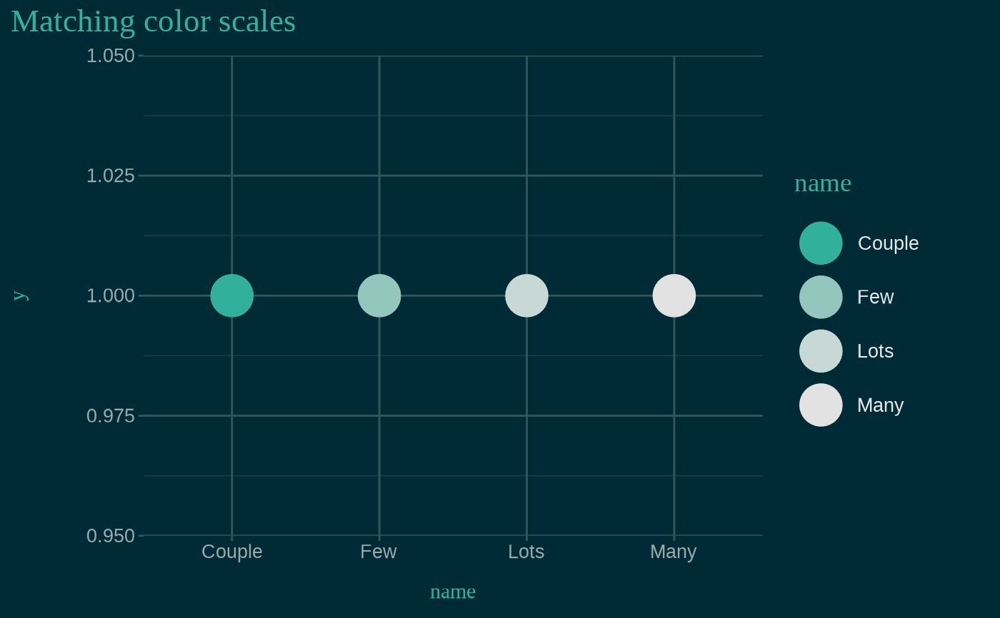

![[Maturing]](figures/lifecycle-maturing.svg)
Color and fill single-color scales for discrete and continuous values,
created using the primary accent color of the xaringanthemer styles. See
vignette("ggplot2-themes") for more information and examples of
xaringanthemer's ggplot2-related functions.
Usage
scale_xaringan_discrete(
aes_type = c("color", "colour", "fill"),
...,
color = NULL,
direction = 1,
inverse = FALSE,
na.value = "grey50"
)
scale_xaringan_fill_discrete(..., color = NULL, direction = 1, inverse = FALSE)
scale_xaringan_color_discrete(
...,
color = NULL,
direction = 1,
inverse = FALSE
)
scale_xaringan_colour_discrete(
...,
color = NULL,
direction = 1,
inverse = FALSE
)
scale_xaringan_continuous(
aes_type = c("color", "colour", "fill"),
...,
color = NULL,
begin = 0,
end = 1,
inverse = FALSE,
na.value = "grey50"
)
scale_xaringan_fill_continuous(
...,
color = NULL,
begin = 0,
end = 1,
inverse = FALSE
)
scale_xaringan_color_continuous(
...,
color = NULL,
begin = 0,
end = 1,
inverse = FALSE
)
scale_xaringan_colour_continuous(
...,
color = NULL,
begin = 0,
end = 1,
inverse = FALSE
)Arguments
- aes_type
The type of aesthetic to which the scale is being applied. One of "color", "colour", or "fill".
- ...
Arguments passed on to either the colorspace scale functions — one of
colorspace::scale_color_discrete_sequential(),colorspace::scale_color_continuous_sequential(),colorspace::scale_fill_discrete_sequential(), orcolorspace::scale_fill_continuous_sequential()— or to ggplot2::continuous_scale or ggplot2::discrete_scale.- color
A color value, in hex, to override the default color. Otherwise, the primary color of the resulting scale is chosen from the xaringanthemer slide styles.
- direction
Direction of the discrete scale. Use values less than 0 to reverse the direction, e.g.
direction = -1.- inverse
If
coloris not supplied andinverse = TRUE, a primary color is chosen to work well with the inverse slide styles, namely the value ofinverse_header_color- na.value
Color to be used for missing data points.
- begin
Number in the range of
[0, 1]indicating to which point in the color scale the smallest data value should be mapped.- end
Number in the range of
[0, 1]indicating to which point in the color scale the largest data value should be mapped.
Examples
# Requires ggplot2
has_ggplot2 <- requireNamespace("ggplot2", quietly = TRUE)
if (has_ggplot2) {
library(ggplot2)
# Saving the theme to a temp file because this is an example
path_to_css_file <- tempfile(fileext = ".css")
# Create the xaringan theme: dark blue background with teal green accents
style_duo(
primary_color = "#002b36",
secondary_color = "#31b09e",
# Using basic fonts for this example, but the plot theme will
# automatically use your theme font if you use Google fonts
text_font_family = "sans",
header_font_family = "serif",
outfile = path_to_css_file
)
# Here's some very basic example data
ex <- data.frame(
name = c("Couple", "Few", "Lots", "Many"),
n = c(2, 3, 5, 7)
)
# Fill color scales demo
ggplot(ex) +
aes(name, n, fill = n) +
geom_col() +
ggtitle("Matching fill scales") +
# themed to match the slides: dark blue background with teal text
theme_xaringan() +
# Fill color matches teal text
scale_xaringan_fill_continuous()
# Color scales demo
ggplot(ex) +
aes(name, y = 1, color = name) +
geom_point(size = 10) +
ggtitle("Matching color scales") +
# themed to match the slides: dark blue background with teal text
theme_xaringan() +
# Fill color matches teal text
scale_xaringan_color_discrete(direction = -1)
}
